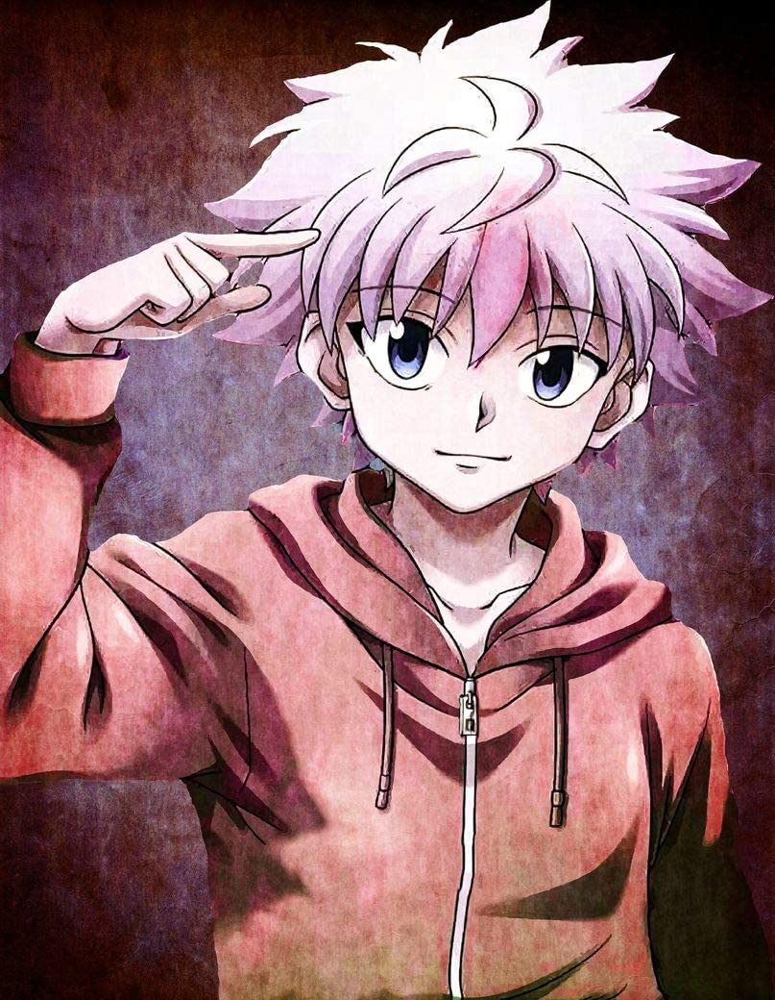
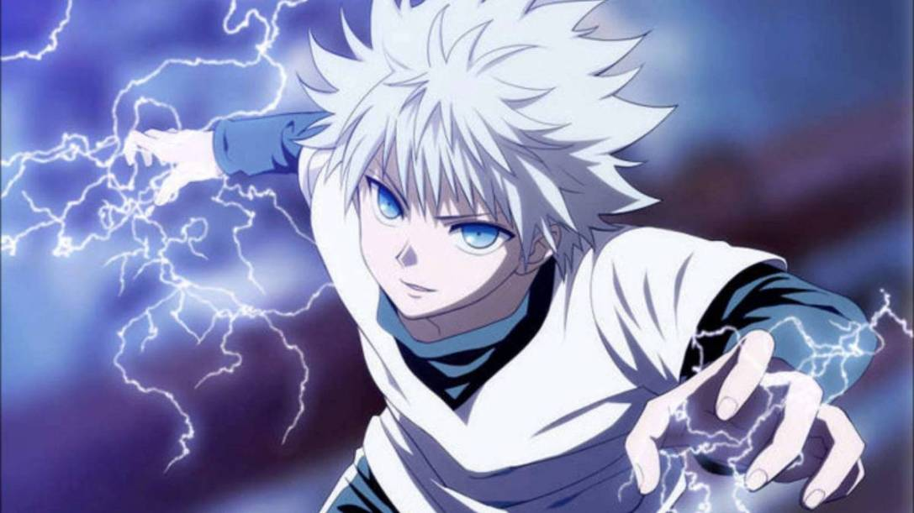
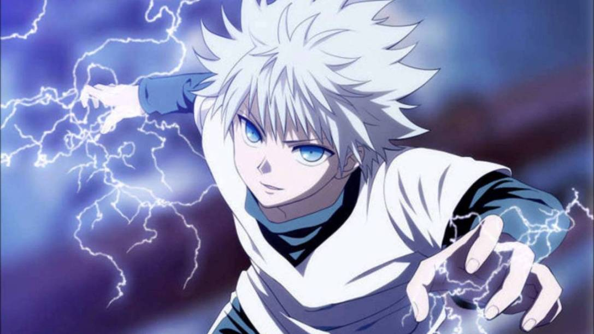
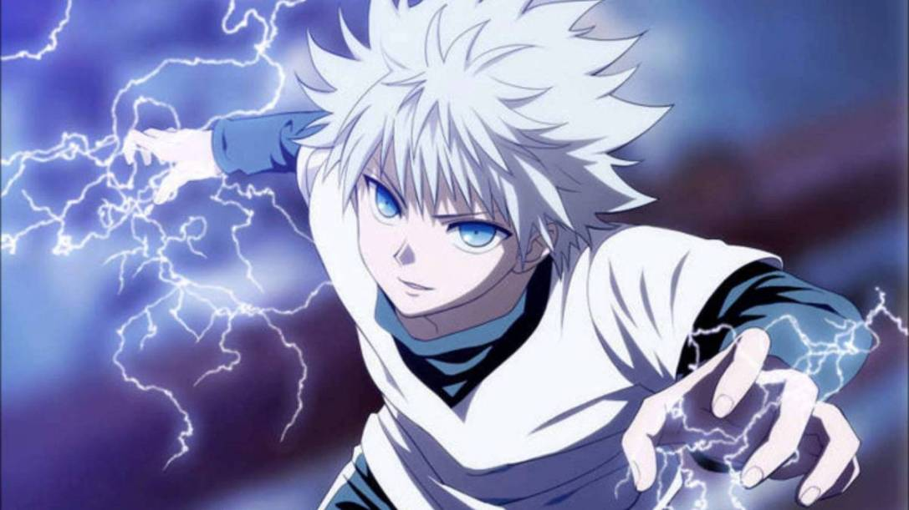
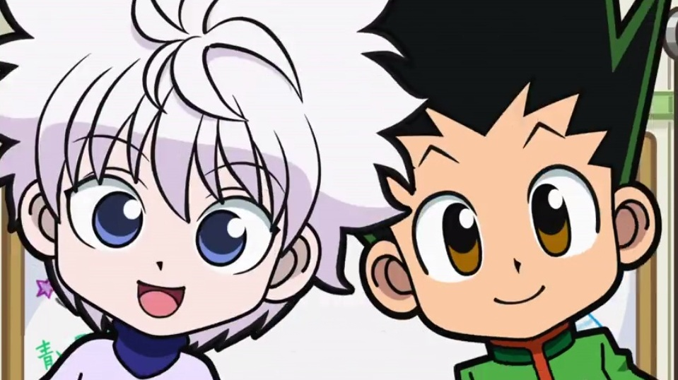
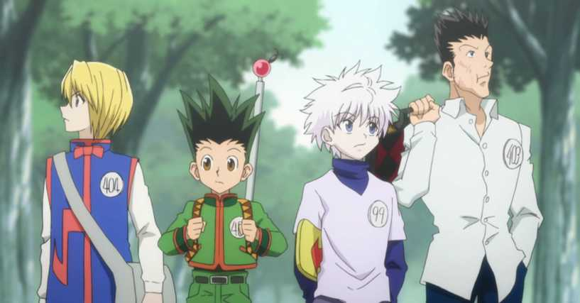
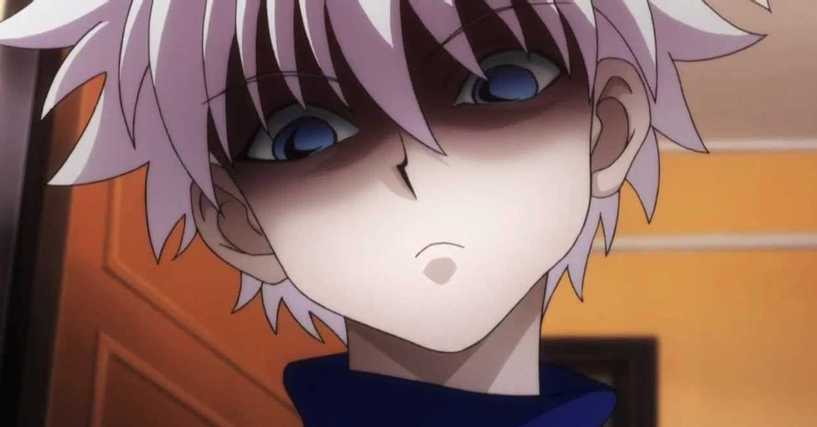
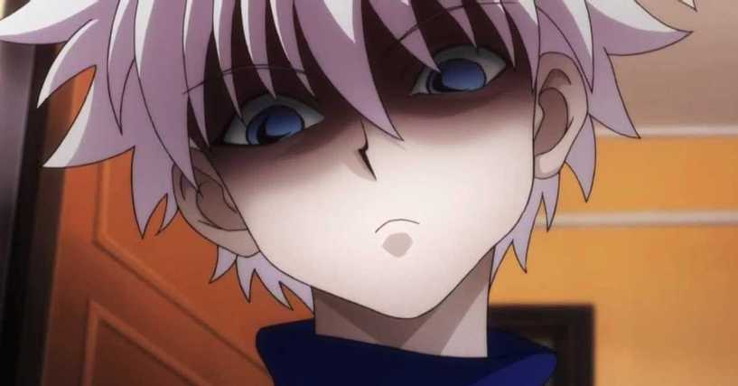
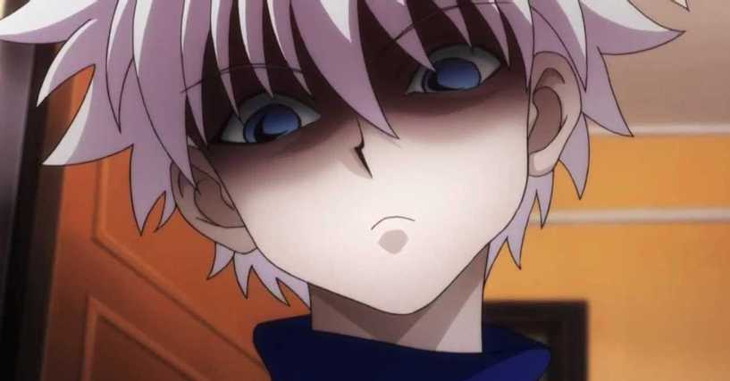

Killua Zoldyck
キルア゠ゾルディック

 




 


Self Healing and Trauma
- He is the third child of Silva and Kikyo Zoldyck. The true heir of their Assasin Family. He runs away from home in search of his own destiny.
After many years of beating and domination by his family. He decides to run away from home and become a rookie hunter.
Throughtout the journey Killua meets his first friend, Gon Freecss. Now bestfriends, Killua was able to experience the love of a true Friendship.
Before defeating the Kamera ants, Killua needed to deal with an internal battle. He was trying to heal the trauma his brother had caused him. After the trauma was healed, Killua was able to become his best self and his powers grew even stronger. Making him and his sister, Alluka Zoldyck, the two most powerful.